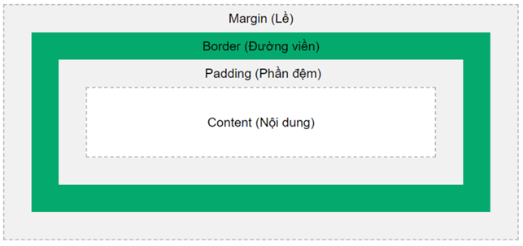

Nội dung thẻ p
Nội dung thẻ p2
Nội dung thẻ p3
Nội dung thẻ p4
Nội dung thẻ p5
Nội dung thẻ p6
Nội dung thẻ p7
WELCOME HTML
Selector css:
Simple selectors (Bộ chọn đơn giản)
Combinator selectors (Bộ chọn tổ hợp)
Pseudo-class selectors (Bộ chọn lớp giả)
Pseudo-elements selectors (Bộ chọn phần tử giả)
Attribute selectors (Bộ chọn thuộc tính)
Simple selectors (Bộ chọn đơn giản)
- Chọn theo element: Css theo tên thẻ
- Chọn theo id: # truước css - HẠN CHẾ - SẼ BỊ LẶP CODE
- Chọn theo class: . trước css - ƯU ĐIỂM - KHÔNG BỊ LẶP CODE - CÁC ELEMENT CÓ THỂ CÙNG CLASS
- Chọn chung: * - chọn tất cả các element
- Chọn theo nhóm: chọn tất cả các element có cùng thuộc tính css
3 kiểu chèn css
- Inline css: chèn css trực tiếp vào element trong thẻ html - Css cho 1 element duy nhất - Khi change code sẽ sửa tất cả cá thẻ đó => Mất THỜI GIAN
- Internal css: chèn css vào bất cứ đâu trong html - Chỉ áp dụng 1 trang html
- External css: tạo riêng 1 file css và liên kết với file html - ƯU ĐIỂM - Dễ dàng quản lý, bảo trì, tái sử dụng
- Thẻ link phải đặt trong file html trong phần head
- ÁP DỤNG NHIỀU TRANG HTML
- Lưu ý: Nếu trùng bộ chọn và tên thuộc tính, thì giá trị của bộ chọn CUỐI CÙNG được sử dụng.
Thuộc tính css:
- color: màu sắc của văn bản
- background-color: màu nền của hết element
- background-image: nền là hình ảnh -- background-image: url("đường dẫn hình ảnh");
- background-image: linear-gradient(định hướng, màu sắc 1, màu sắc 2, ...); (180deg; ...) - thêm url cx đc
- background-size: kích thước của hình nền (cover: phủ toàn bộ element cắt phần thừa, contain: vừa đủ, auto: kích thước gốc) (%, px,...)
- background-repeat: lặp lại ảnh hay k
background-repeat: no-repeat; // Không lặp lại ảnh
background-repeat: repeat-x; // Lặp theo trục ngang
background-repeat: repeat-y; // Lặp theo trục dọc
- background-position: vị trí hình nền so với element. Có các giá trị: top, left, right, bottom, center.
background-position: top left; // trên - trái
background-position: top right; // trên - phải
background-position: top center; // trên - giữa
background-position: bottom left; // dưới - trái
background-position: bottom right; // dưới - phải
background-position: bottom 30px right 20px; // cách dưới 30px - cách phải 20px
- background-attachment: nền sẽ được cuộn cố định khi kéo lên xún
background-attachment: fixed; // Hình nền được fix cố định khi di cuộn web
- background-clip: xác định phạm vi được thiết lập màu nền của phần tử (Áp dụng cho background là màu sắc)
border-box: Mặc định. Đổ màu từ content cho đến hết border.
padding-box: Đổ màu từ content cho đến hết padding.
content-box: Chỉ đổ màu phần content
- background-origin: giống background-clip, nhưng blackground-clip là dành cho nền là màu sắc, còn background-origin là dùng cho nền ảnh.
content-box: background chỉ chiếm phần content.
padding-box: background chiếm phần content và padding.
border-box: background chiếm phần content, padding và border.
Box Model (Mô hình hộp)
Content (Nội dung) - Nội dung của element, nơi văn bản và hình ảnh xuất hiện.
Padding - Tạo một khoảng trống xung quanh nội dung. Phần đệm trong suốt.
Border (Đường viền): Đường viền bao quanh padding (phần đệm) và nội dung.
Margin (Lề) - KHẢNG CÁCH 2 ELEMENT

- Border
- border-style: ;
- dotted (chấm), solid(viền), dashed(nét đứt), none(k có)
- Padding / Margin
- top, right, bottom, left
- padđing/margin: ; -- CÁCH 4 BỐN
Text, Fonts, Icons
- Text Align: được sử dụng để thiết lập căn lề ngang của văn bản.
text-align: center; // Căn giữa
text-align: left; // Căn trái
text-align: right; // Căn phải
text-align: justify; // Căn đều 2 bên
- Text Transform: thuộc tính text-transform được sử dụng để chỉ định chữ hoa và chữ thường trong văn bản.
text-transform: uppercase; // VIẾT CHỮ HOA
text-transform: lowercase; // viết chữ thường
text-transform: capitalize; // Viết Hoa Các Chữ Cái Đầu
- FONTS
Phông chữ Serif (có chân) có một nét nhỏ ở các cạnh của mỗi chữ cái.
Phông chữ Sans-serif (không chân)
Thuộc tính font-family: Để chỉ định font chữ của văn bản
- font-style: Thuộc tính font-style chủ yếu được sử dụng để chỉ định văn bản in nghiêng.
Thuộc tính này có 3 giá trị:
normal - Văn bản được hiển thị bình thường
italic - Văn bản được hiển thị in nghiêng
oblique (xiên) - Văn bản "nghiêng" (xiên rất giống với chữ nghiêng, nhưng nghiêng hơn và ít được sử dụng)
- Font Weight:
Thuộc tính font-weight để chỉ định độ dày của chữ
Giá trị có thể là: normal, bold, 100, 200, 300,..., 800,900
- font-size